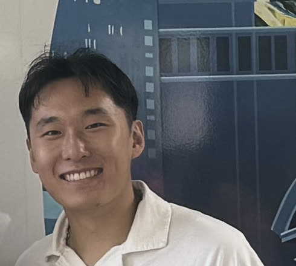

We bring free eye care to people without a home.
Shared Vision sets up free eye screenings at shelters and community sites across Philadelphia. When a screening finds a problem, we help the person get insurance, free or low-cost glasses and a ride to their eye appointment.
DonateThe button takes you to our donation page on Zeffy.
Nearly half needed more care.
12 of 26 people we screened at community health fairs since September 2026 needed follow-up care.
- Pairs of reading glasses given out
- 11
- Pamphlets given out
- 15
Follow-up care for cataracts, glaucoma and more
- Comprehensive examA full eye exam4 people
- CataractClouding of the lens3 people
- GlaucomaA disease of the optic nerve2 people
- High myopiaVery nearsighted2 people
- Keratoconus or severe astigmatismA cornea that bends light unevenly1 person
Poor eyesight can cost people their jobs and their homes.
About $411 billion
is lost in productivity around the world each year because of poor eyesight, the World Health Organization estimates.
Source: World Health Organization fact sheet, 10 February 2026.
In shelters across Philadelphia, we have listened to human beings describe how treatable conditions robbed them of their eyesight and their jobs, leading to eviction and homelessness.
Yet we also found that eye health was overlooked due to the prioritization of competing survival needs, including food and shelter.
We have a shared vision to break this vicious cycle for as many people as possible.
In a founder’s words

“We hope to help patients who would typically be excluded from traditional health care systems finally be able to access the care that they need.”
Shared Vision was started by Eric Lee, Janine Haros and Justin Wang. They plan the screenings with the van team and help people get the care that follows.
Meet the teamWhere your gift goes
The money goes toward buying ophthalmic equipment to improve our vision screenings, funding prescription eyeglasses to meet patients’ day-to-day needs, and expanding our operations to other neighborhoods and cities.
We bring free eye care to people without a home.
The button takes you to our donation page on Zeffy.
To ask about giving, email sharedvision2026@